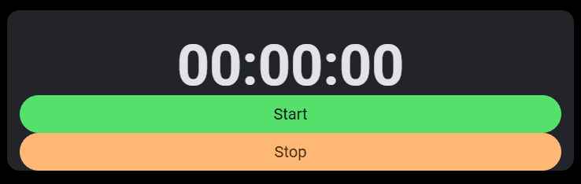

shinyTimer allows you to easily integrate a countdown timer into Shiny UI, providing real-time updates and server notification when the timer completes.
In examples below I make use of shinyMobile framework.

How it works
To get things work you need to add in your UI shinyTimer() and trigger an action in your server (e.g. countDown()).
shinyTimer() is by default formatted as simple one, but you can switch format to a clock.
You can either set only seconds, minutes or both.
When timer completes
Once the timer reaches 0 JavaScript sends timer_done value to Shiny input. You can use it to trigger an action (see example below).
ui <- shinyMobile::f7Page(
shinyMobile::f7Card(
shinyTimer(
inputId = "shiny_timer",
seconds = 10L,
format = "simple",
style = "font-weight: bold; font-size: 72px; text-align:center"
),
shinyMobile::f7Button(
"start_timer",
label = "Start",
size = "large",
rounded = TRUE,
color = "orange"
) |>
htmltools::tagAppendAttributes(
style="font-size:20px;"
)
)
)
server <- function(input, output, session) {
shiny::observeEvent(input$start_timer, {
shinyTimer::countDown(session, "shiny_timer")
})
shiny::observeEvent(input$timer_done, {
shinyMobile::f7Dialog(
id = "dialog",
title = "Time's Up!",
text = ""
)
})
}
shinyApp(ui, server)Stopwatch
You can also use shinyTimer as a stopwatch. Simply trigger shinyTimer in your server with countUp():
